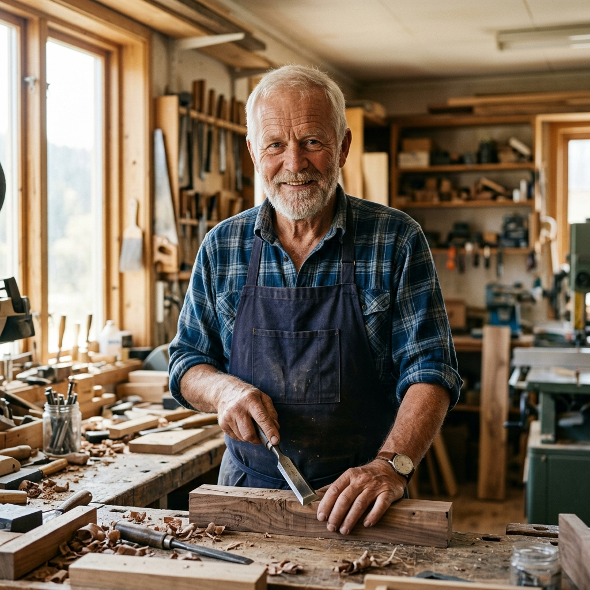

Design Purity
Functional, minimal shapes designed to breathe space and light into modern apartment layouts.

We believe that home is more than a physical space. It is a sanctuary for reflection, clarity, and connection. Our pieces are sculpted to highlight the quiet brilliance of raw nature.
Inspired by the dialogue between Japanese simplicity and Scandinavian warmth (Japandi), our designers focus on stripping away the unnecessary noise.
Every joint is engineered to balance load, and every surface is hand-finished with organic oils. The result is a collection of silent sculptures that integrate effortlessly with modern architectural plans.
Every timber beam originates from responsibly managed forests in France and Germany, upholding strict biodiversity conservation rules.
Our tactile boucle, linen, and wool fabrics are spun and dyed locally using organic natural extracts free of chemicals.
We offset all delivery miles and utilize flat-packed component systems where appropriate to minimize layout footprint.
Functional, minimal shapes designed to breathe space and light into modern apartment layouts.
Every product footprint matches standard space planning systems, ensuring clean integration in our Room Composer.
Bridging historical joinery methods with advanced laser-guided precision cutting systems.
No middleman markups. Direct material-to-collector supply chains that honor skilled woodworkers.
Our pieces carry the signature and pride of their makers. Meet the hands shaping raw wood into art.

With over 24 years of custom woodworking experience, Soren focuses on standard wood dowelling, Japanese mortise-and-tenon connections, and custom ash selection.
Elena oversees our premium upholstery processes. She ensures every piece of bouclé or organic Belgian linen is tensioned properly by hand for generations of use.
Interact with our curated library of raw components. Select any swatch to view technical specifications, regional origins, and featured products.
Sourced from sustainably managed forests in the Baltic region. Kiln-dried and finished with a zero-VOC matte hardwax oil to preserve the raw grain, texture, and natural golden hues.
Every piece of Kave is built to outlast generations. See the stages of patience and precision behind each silhouette.
We personally inspect and select sustainably grown European Oak logs based on grain symmetry, lack of defects, and moisture content. The logs are air-seasoned for up to 12 months to guarantee dimensional stability before cutting.
Bridging modern software with raw wood, computer-controlled milling machines carve out the preliminary profiles. This ensures micro-millimeter precision for interlocking joints, reducing material waste by up to 30%.
Our master joiners assemble the components by hand using traditional dowels, mortise-and-tenon joints, and custom wood pegs. No metal screws or synthetic adhesives are used in our structural cores, honoring heritage techniques.
Each surface undergoes five passes of hand-sanding, down to a silky 320-grit texture. Finally, we rub in three coats of zero-VOC organic hardwax oils, which protect the wood fibers while letting the oak breathe.